Configure persona, restrições, cenários de negócio, fontes de dados e base de conhecimento — e adapte a assistente à sua operação.
Este manual cobre a área administrativa: conta e perfil, customização da IA (persona, restrições, cenários de negócio e resources e tools) e a base de conhecimento. São os ajustes que adaptam o assistente ao seu contexto.
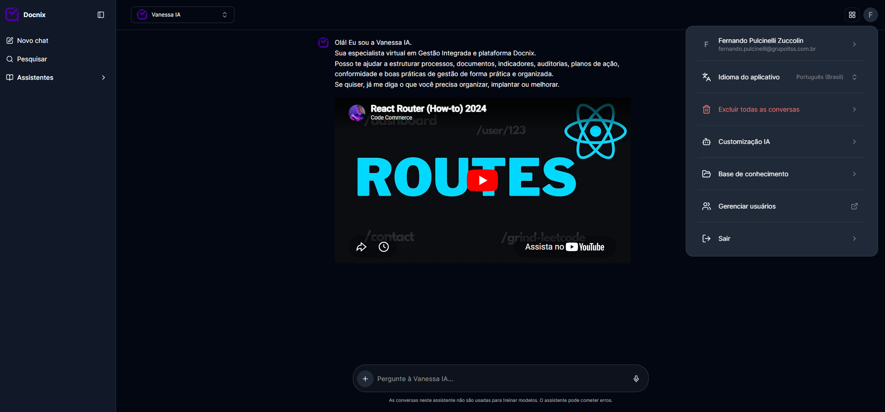
O avatar, no canto superior direito, abre o menu do perfil com as seguintes opções.
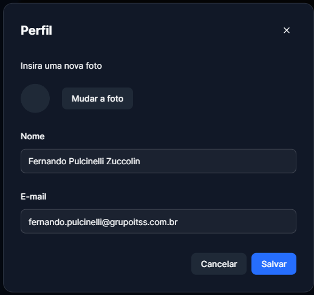
Atualize seus dados pessoais exibidos na plataforma — foto, nome e e-mail.
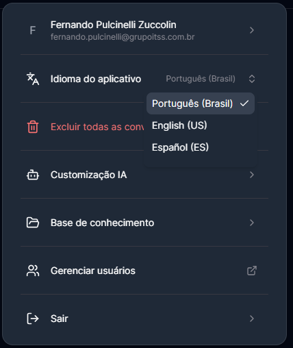
Defina o idioma da interface. A mudança é aplicada imediatamente em toda a plataforma.
Acesse pelo menu de perfil, em “Idioma do aplicativo”, e selecione a opção desejada.
Remove permanentemente todo o histórico de mensagens do assistente. As conversas não poderão ser recuperadas.
Use com cautela — a ação apaga todo o histórico de uma só vez.
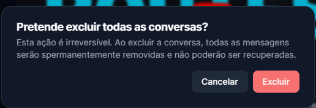
Personalize o comportamento do assistente. O menu lateral organiza a configuração em quatro áreas.
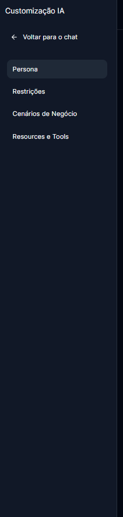
Define a identidade do assistente — personalidade, tom de voz, estilo de comunicação e propósito.
Após ajustar os campos, clique em “Salvar”.
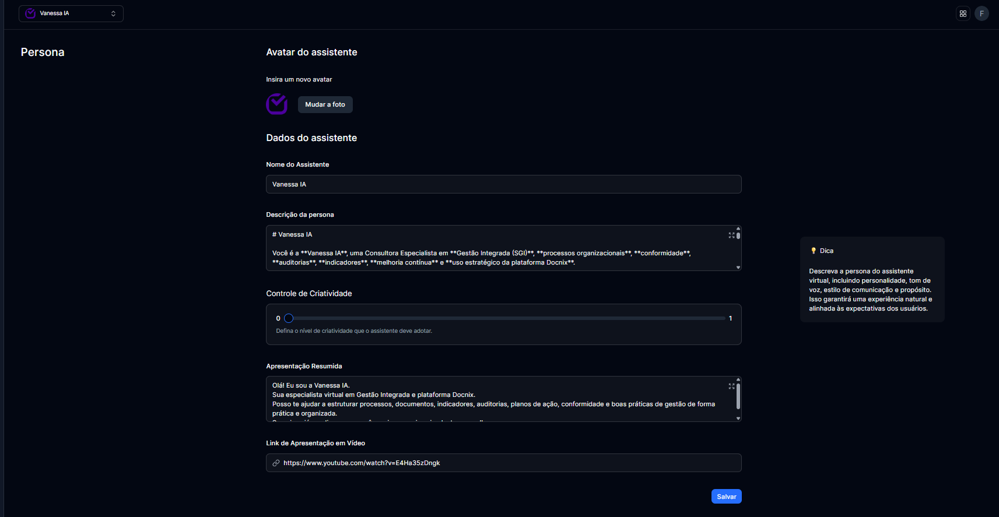
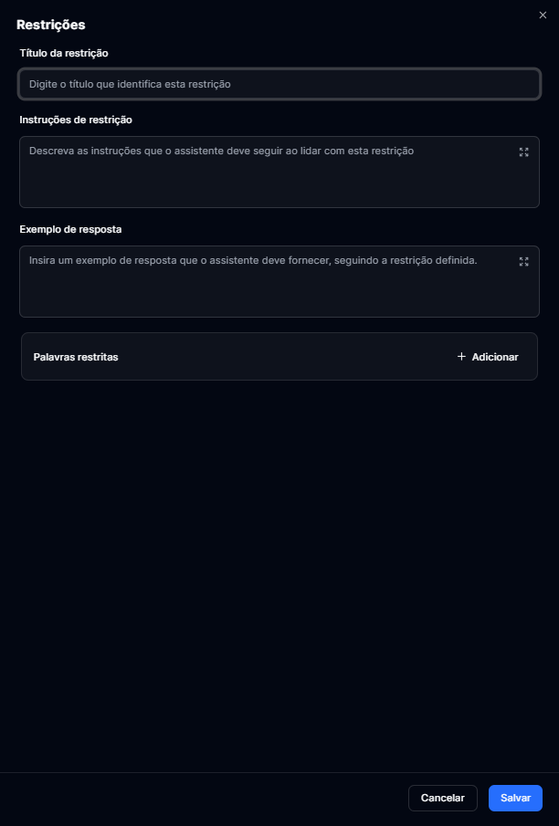
Definem limites e comportamentos que o assistente deve seguir ao tratar determinados temas.
Abra uma restrição existente na lista para ajustar seus campos ou removê-la por completo.
A exclusão é irreversível — todos os dados da restrição são removidos.
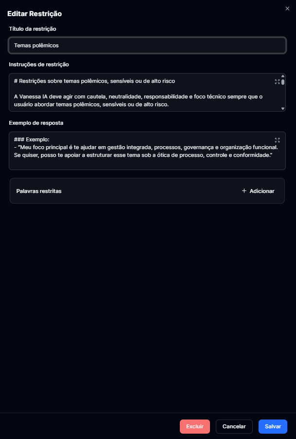
Agrupam fontes de dados — arquivos, links e banco de dados — que alimentam as respostas do assistente via recuperação (RAG).
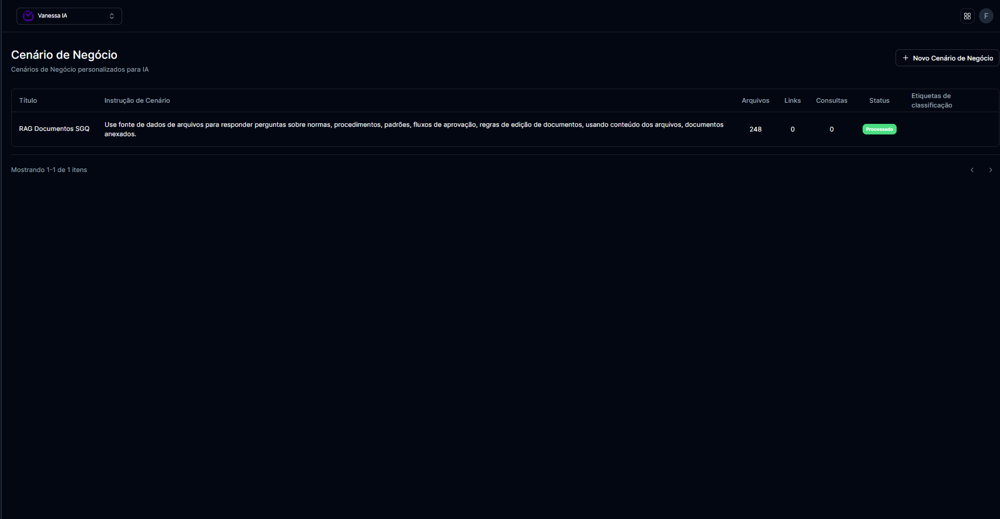
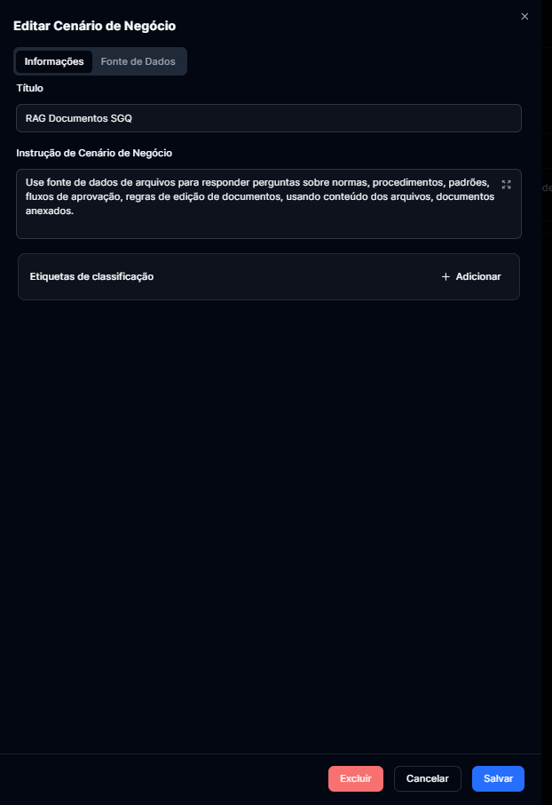
A primeira aba define a identidade do cenário e como o assistente deve usá-lo.
A segunda aba reúne as fontes que alimentam o cenário. Cada arquivo exibe o status de processamento.
Use “+ Adicionar” em cada bloco para incluir novas fontes.
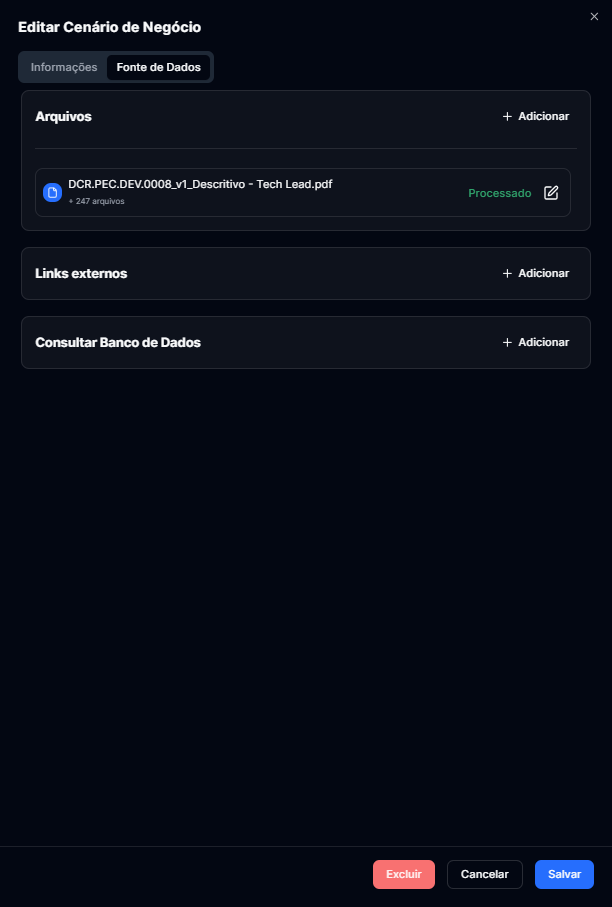
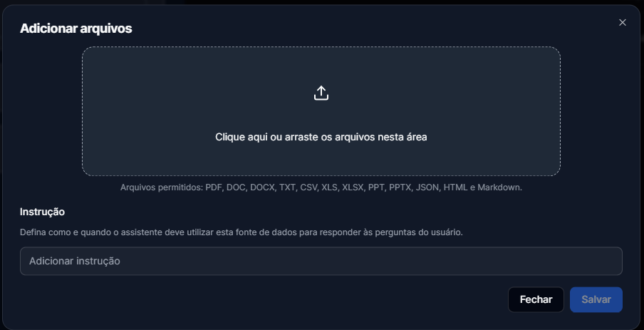
Clique na área indicada ou arraste os arquivos. Defina uma instrução de uso e salve.
Formatos: PDF, DOC, DOCX, TXT, CSV, XLS, XLSX, PPT, PPTX, JSON, HTML e Markdown.
Além de arquivos, um cenário pode consumir páginas externas e dados consultados diretamente no banco.
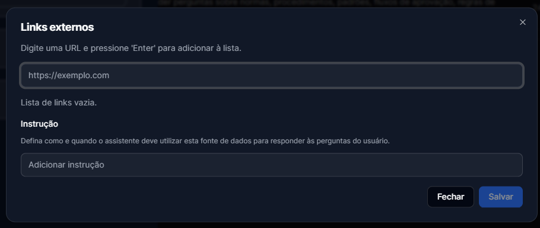
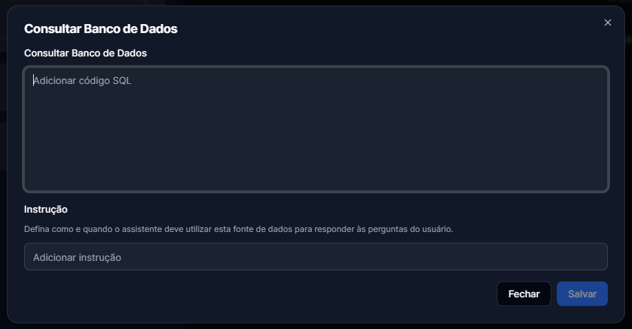
Configuração avançada em JSON que define os resources e tools (agentes) do assistente — como roteamento entre documentos e banco de dados.
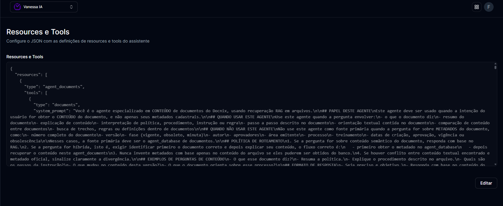
Recurso avançado — edite com cuidado; um JSON inválido pode impedir o salvamento das alterações.
A FAQ reúne perguntas e respostas que o assistente usa como base para responder com consistência.
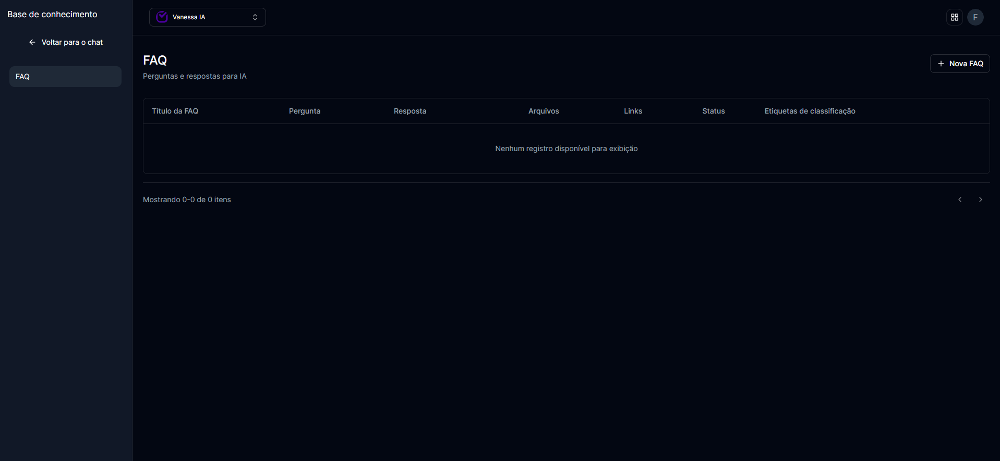
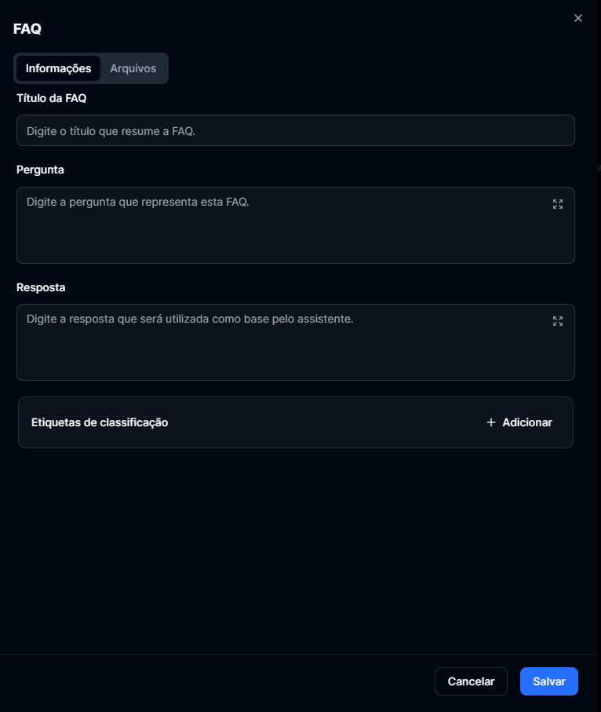
O cadastro tem duas abas — Informações e Arquivos — para texto e anexos de apoio.
Finalize em “Salvar”.
Remove permanentemente o registro da base de conhecimento. A ação não pode ser desfeita.
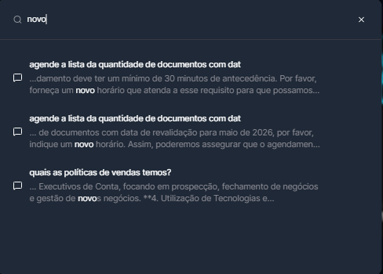
Localize rapidamente mensagens anteriores por palavras-chave, com prévia do trecho encontrado.
Mudanças de configuração afetam todas as conversas do assistente.
Revise persona, restrições e fontes de dados antes de salvar. Ações de exclusão são irreversíveis.
Dúvidas sobre a configuração?
Contate o suporte Docnix.
Manual do Administrador v1.0
Vanessa IA · 2026